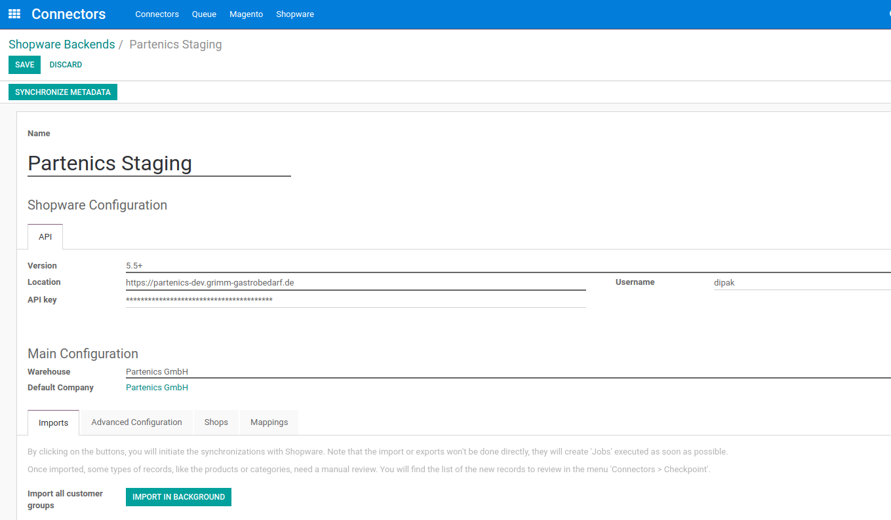

<section class="oe_container oe_dark" style="overflow: hidden;
background: #efefef;
box-shadow: none;">
    <div class="mt32 mb32">
        <div class="col-md-12">
            <h2 class="oe_slogan" style="font-size: 35px;"><b>Odoo Shopware Connector</b></h2>
            <h3 class="oe_slogan" style="opacity: 1;">Main purpose of this module is to connect Odoo with Shopware.</h3>
        </div>
    </div>
</section>

<section class="oe_container oe_dark">
    <section class="oe_container oe_dark lead">
        <div class="oe_row">    
            <div class="oe_span12" style="width: 828px;">
            <div class="panel panel-primary" id="wkid0" style="border-color: #528df3 !important;">
            <div class="panel-heading" style="background-color: #528df3 !important;>
            <h3 class="panel-title" style="font-size: 25px;"><i class="fa fa-mail-forward"></i>key features:</h3>
            </div>
                <div class="panel-body">
                    <ul class="list-unstyled">
                        <li><i class="fa fa-check text-primary" style="color: #528df3 !important;"></i> Export Product from odoo to shopware.</li>
                        <li><i class="fa fa-check text-primary" style="color: #528df3 !important;"></i> Export Product Categories from odoo to shopware.</li>
                        <li><i class="fa fa-check text-primary" style="color: #528df3 !important;"></i> Export Property Set, Property Value and options from odoo to shopware.</li>
                        <li><i class="fa fa-check text-primary" style="color: #528df3 !important;"></i> Export Manufacturer data from odoo to shopware.</li>
                        <li><i class="fa fa-check text-primary" style="color: #528df3 !important;"></i> Export Product from odoo to shopware.</li>
                        <li><i class="fa fa-check text-primary" style="color: #528df3 !important;"></i> Import Shopware metadata like shops, categories from shopware to odoo.</li>
                        <li><i class="fa fa-check text-primary" style="color: #528df3 !important;"></i> Import Sale Order from shopware to odoo.</li>
                        <li><i class="fa fa-check text-primary" style="color: #528df3 !important;"></i> Configure tax mapping.</li>
                    </ul>
                </div>
                </div>
                </div>
        </div>
    </section>
    </section>

<br/>
<section class="oe_container lead">
    <div class="oe_row oe_spaced">
        <div class="oe_span12">
        <h1 class="text-info" style="text-align: center;padding-bottom: 40px;"><strong>Search View</strong></h1>
        <h3 class="text-info" style="font-size: 25px;">Search view for product.</h3>
            <br/>
            
        </div>
    </div>
</section>


